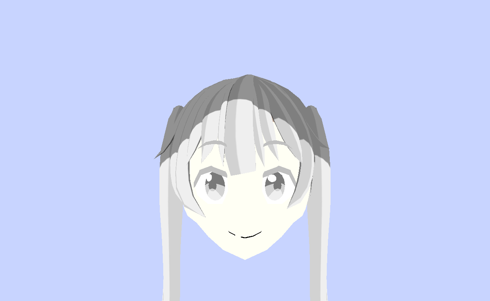
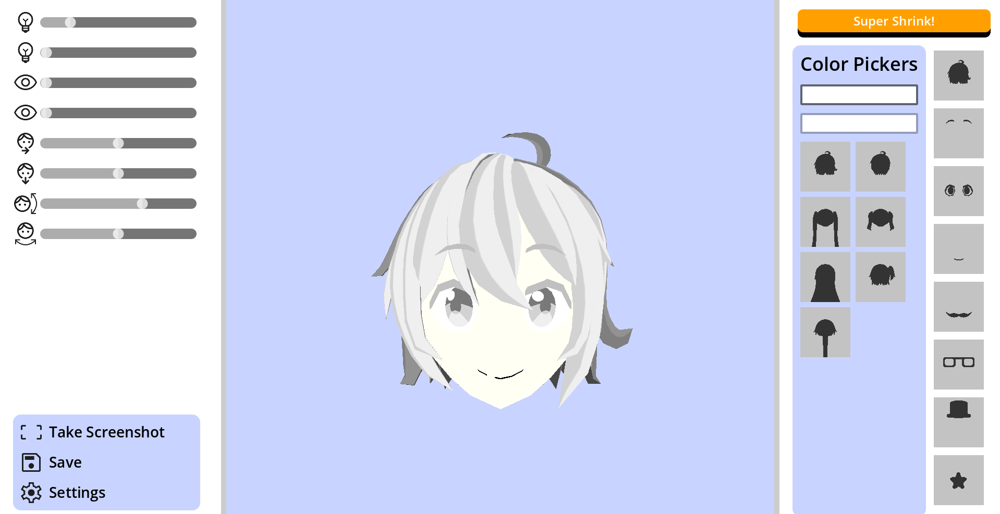
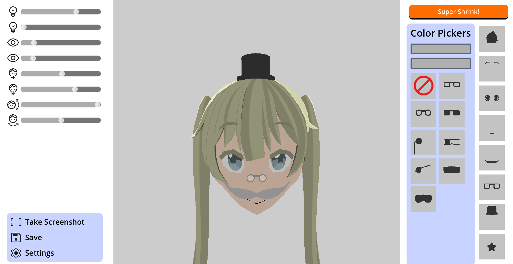
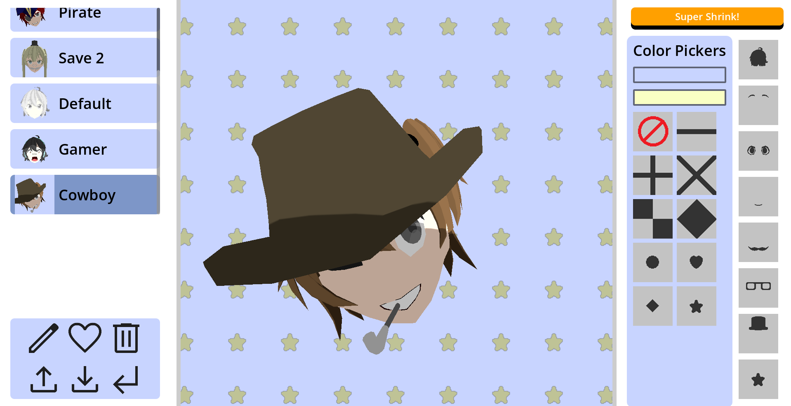
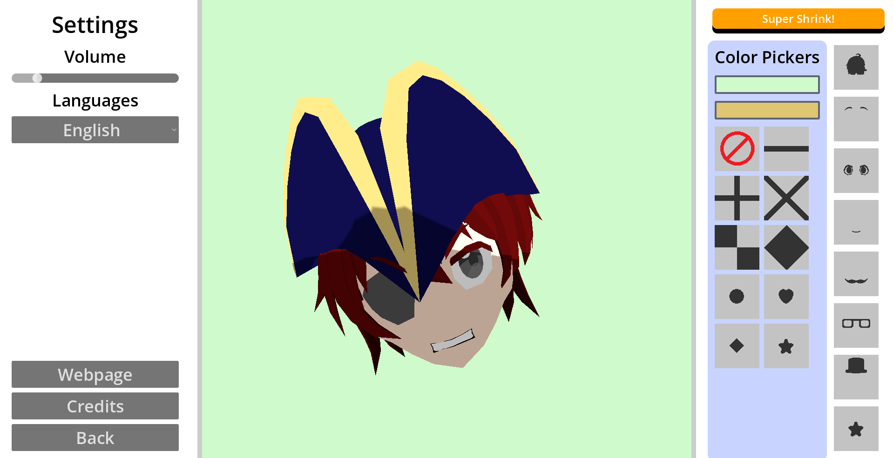

A Character Customization Game
This game was developed for the Micro Game Jam hosted by the Game Design Society in January 2025. It is a customization game featuring eight distinct categories, along with sliders to adjust lighting angle and character poses. The game also includes a screenshot function for capturing favourite designs and a save system for preserving customizations. Since the jam, I have continued polishing the game to its current state which now supports Desktop, Android, and Browser builds with multilingual support. All of the 3D assets were created in Blender, and the entire codebase was written in Godot.





The main challenge in developing this game was implementing a reliable save and load system. By carefully studying the Godot documentation and addressing each issue step by step, I successfully built the saving functionality. This process strengthened my ability to interpret technical documentation and enhanced my confidence in creating more complex systems.